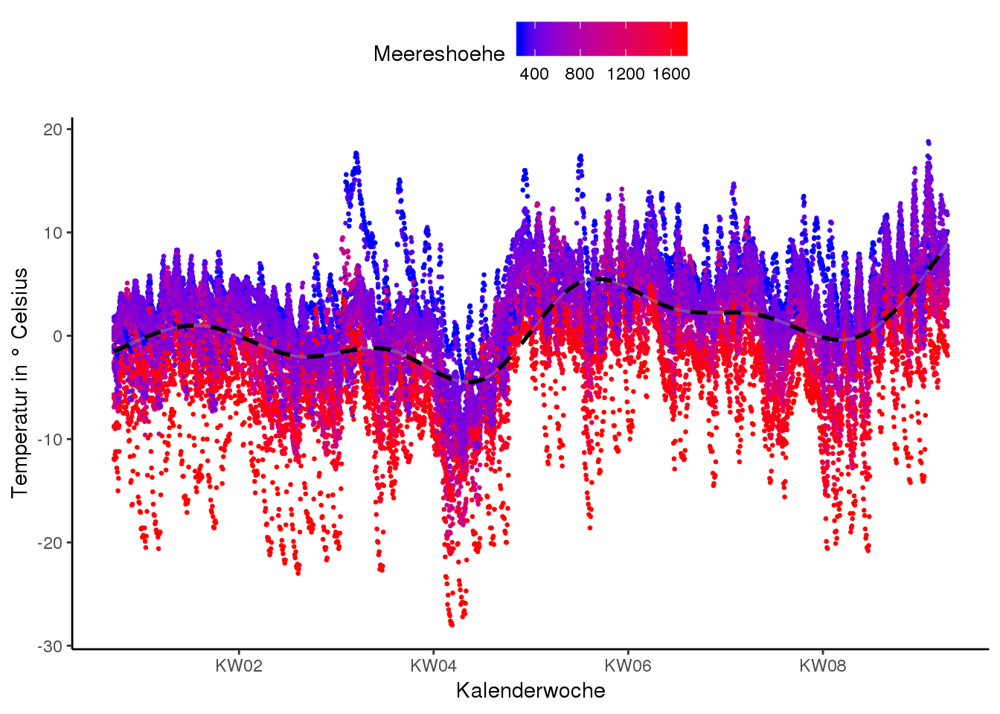
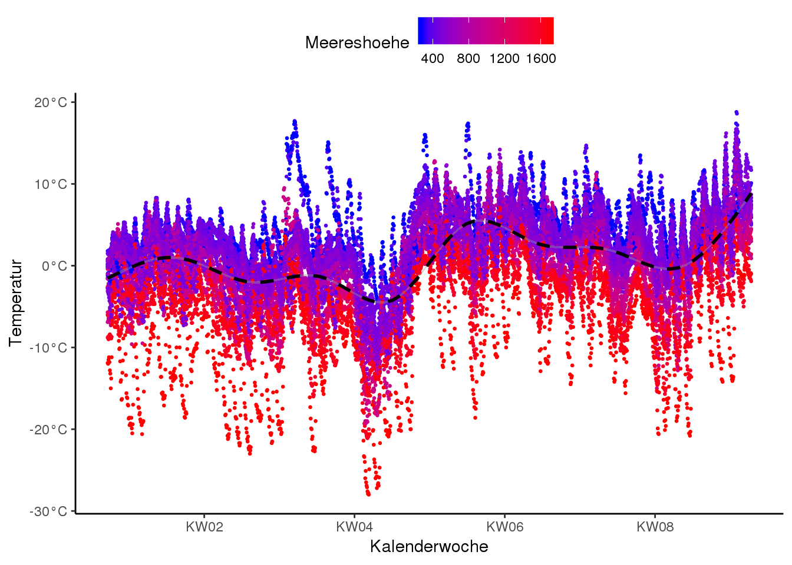
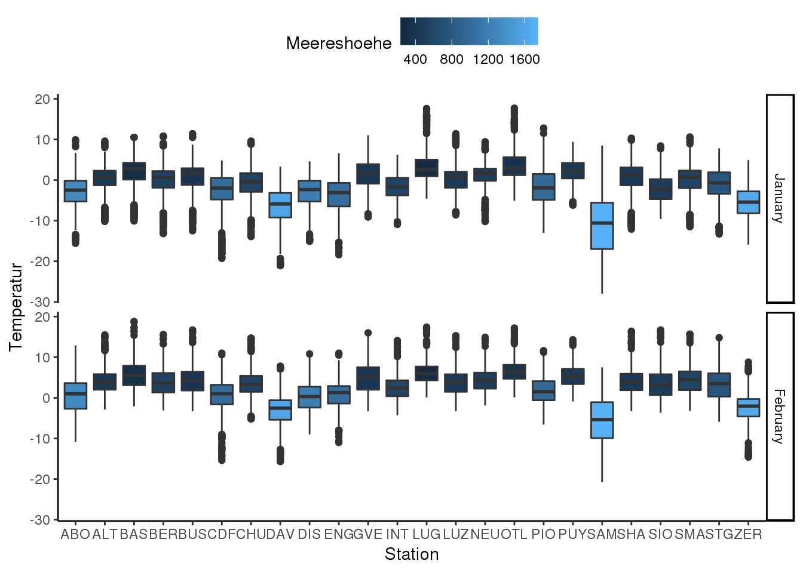
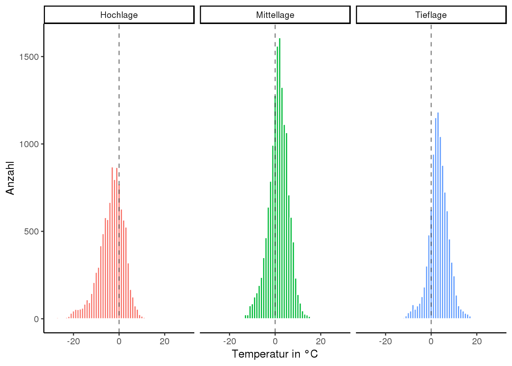

5.1 Übung A
library(tidyverse)
library(lubridate)Laden den wetter-Datensatz, bereinige ihn wenn nötig (NA-Werte entfernen) und importiere auch den Datensatz order_52252_legend.csv und verbinde die Datensätze mit einem join via dem Stationskürzel.
wetter <- read_table("09_PrePro1/data/order_52252_data.txt",
col_types = list(
col_character(),
col_datetime(format = "%Y%m%d%H"),
col_double()
)
)
wetter <- wetter %>%
filter(!is.na(stn)) %>%
filter(!is.na(time))
station_meta <- read_delim("09_PrePro1/data/order_52252_legend.csv",";")
wetter <- left_join(wetter,station_meta,by = "stn")5.1.1 Aufgabe 1
Erstelle zwei Hilfsspalten (convenience variables) “Jahr” und “Monat”. Filtere auf ein beliebiges Jahr und zwei beliebige Monate. Speichere den gefilterten Datensatz in einer neuen Variablen ab. Verwende diesen Datensatz für alle folgenden Übungen.
5.1.2 Aufgabe 2
Erstelle ein Scatterplot (time vs. tre200h0) wobei die Punkte aufgrund ihrer Meereshöhe eingefärbt werden sollen. Tiefe Werte sollen dabei blau eingefärbt werden und hohe Werte rot. Verkleinere die Punkte um übermässiges Überplotten der Punkten zu vermeiden. Weiter sollen im Abstand von zwei Wochen die Kalenderwochen auf der Achse erscheinen.
Speichere den Plot in einer Variabel p ab.

5.1.3 Aufgabe 3
Füge am obigen Plot (gespeichert als Variabel p) eine schwarze, gestrichelte Trendlinie hinzu und aktualisiere p (p <- p + ...).

5.1.4 Aufgabe 4
Positioniere die Legende oberhalb des Plots und lege sie quer (nutze dazu theme() mit legend.direction und legend.position). Speichere diese Änderungen in p.

5.1.5 Aufgabe 5 (für ambitionierte)
Füge den Temperaturwerten auf der y-Ache ein °C hinzu (siehe unten und studiere diesen Tipp zur Hilfe). Aktualisiere p an dieser Stelle noch nicht.

5.1.6 Aufgabe 6 (für noch ambitioniertere)
Füge dem Plot eine zweite, korrekt ausgerichtete Achse mit Kelvin oder Farenheit hinzu (siehe sec_axis). Wenn du es vorherigen Übung schon geschafft hast, setze auch hier die Einheit (K rep. °F) hinter die Werte auf der Achse.
\[ K = °C + 273,15\] \[°F = °C × \frac{9}{5} + 32\]
5.1.7 Aufgabe 7
Jetzt verlassen wir den scatterplot und machen einen Boxplot mit den Temperaturdaten. Färbe die Boxplots wieder in Abhängigkeit der Meereshöhe ein.
- Beachte den Unterschied zwischen
colour =undfill = - Beachte den Unterschied zwischen
facet_wrap()undfacet_grid() facet_grid()braucht übrigens noch einen Punkt (.) zur Tilde (~).- Beachte den Unterschied zwischen “
.~” und “~.” beifacet_grid() - verschiebe nach Bedarf die Legende

5.1.8 Aufgabe 8
Teile die Stationen in verschiedene Höhenlagen ein (Tieflage [< 450 m], Mittellage [450 - 1000 m] und Hochlage [> 1’000 m]). Vergleiche die Verteilung der Temperaturwerte in den verschiedenen Lagen.
- Nutze dazu
facet_gridum die Höhenlage dem Monat gegenüber zu stellen (Monat~Lage) - Passe
scales =an damit keine leeren Stellen auf der x-Achse entstehen - Optional: Verwende den vollen Stationsnamen anstelle des Kürzels und drehe diese ab damit sie sich gegenseitig nicht überschreiben

5.1.9 Aufgabe 9
Als letzter wichtiger Plottyp noch zwei Übungen zum Histogramm. Erstelle ein Histogramm geom_histogram() mit den Temperaturwerten. Färbe Säulen aufgrund ihrer Höhenlage ein und die Begrenzungslinie weiss. Setze die Klassenbreite auf 1 Grad.

5.1.10 Aufgabe 10
Erstelle facets aufgrund der Höhenlage. Setze noch eine Vertikale linie beim Nullpunkt und stelle den x-Achsenabschnit symmetrisch ein (z.B -30 bis + 30°C).
